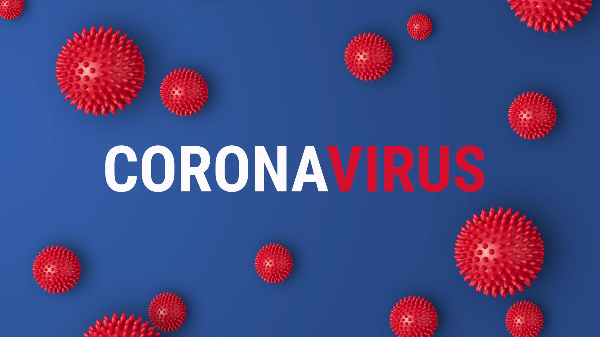
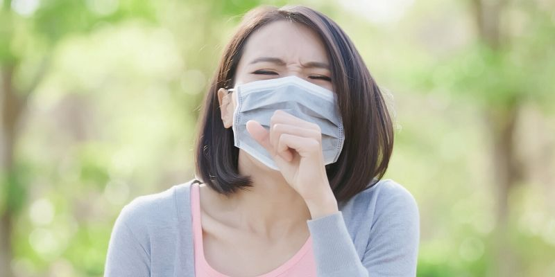
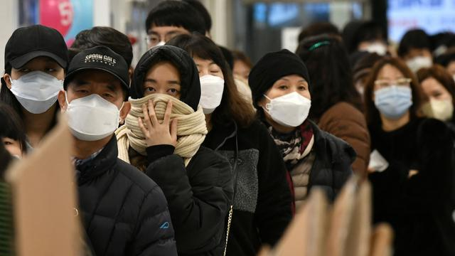
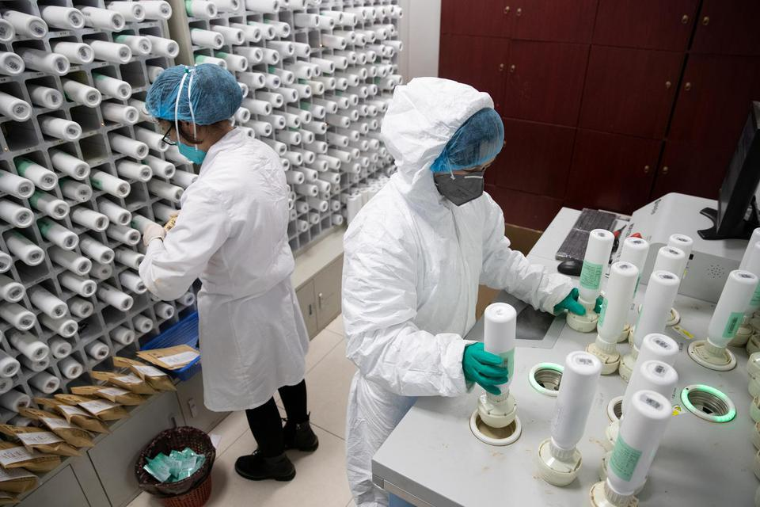
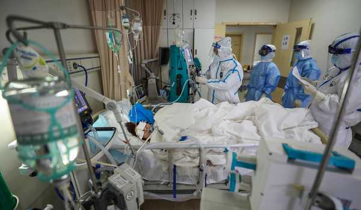

Virus Corona atau severe acute respiratory syndrome coronavirus 2(SARS-CoV-2) adalah virus
yang
menyerang sistem pernapasan. Penyakit karena infeksi virus ini disebut COVID-19. Virus Corona bisa
menyebabkan gangguan ringan pada sistem pernapasan, infeksi paru-paru yang berat, hingga kematian.
🌙 Mode Gelap
☀️ Mode Terang
Mengenal Lebih Jauh Virus Corona (COVID-19)

Severe acute respiratory syndrome coronavirus 2 (SARS-CoV-2) yang lebih dikenal dengan nama virus
Corona
adalah jenis baru dari coronavirus yang menular ke manusia. Walaupun lebih bayak menyerang
lansia, virus
ini sebenarnya bisa menyerang siapa saja, mulai dari bayi, anak-anak, hingga orang dewasa,
termasuk ibu
hamil dan ibu menyusui.
Infeksi virus Corona disebut COVID-19 (Corona Virus Disease 2019) dan pertama kali ditemukan di kota
Wuhan, China pada akhir Desember 2019. Virus ini menular dengan sangat cepat dan telah menyebar ke
hampir semua negara, termasuk Indonesia, hanya dalam waktu beberapa bulan.
Hal tersebut membuat beberapa negara menerapkan kebijakan untuk memberlakukan lockdown dalam rangka
mencegah penyebaran virus Corona. Di Indonesia sendiri, diberlakukan kebijakan Pembatasan Sosial
Berskala Besar (PSBB) untuk menekan penyebaran virus ini.
Coronavirus adalah kumpulan virus yang bisa menginfeksi sistem pernapasan. Pada banyak kasus, virus ini
hanya menyebabkan infeksi pernapasan ringan, seperti flu. Namun, virus ini juga bisa menyebabkan infeksi
pernapasan berat, seperti infeksi paru-paru (pneumonia).
Selain virus SARS-CoV-2 atau virus Corona, virus yang juga termasuk dalam kelompok ini adalah virus
penyebab Severe Acute Respiratory Syndrome (SARS) dan virus penyebab Middle-East Respiratory Syndrome
(MERS). Meski disebabkan oleh virus dari kelompok yang sama, yaitu coronavirus, COVID-19 memiliki
beberapa perbedaan dengan SARS dan MERS, antara lain dalam hal kecepatan penyebaran dan keparahan
gejala.
Gejala Virus Corona (COVID-19)

Gejala awal infeksi virus Corona atau COVID-19 bisa menyerupai gejala flu, yaitu demam, pilek, batuk
kering, sakit tenggorokan, dan sakit kepala. Setelah itu, gejala dapat hilang dan sembuh atau malah
memberat. Penderita dengan gejala yang berat bisa mengalami demam tinggi, batuk berdahak bahkan
berdarah, sesak napas, dan nyeri dada. Gejala-gejala tersebut muncul ketika tubuh bereaksi melawan virus
Corona.
Secara umum, ada 3 gejala umum yang bisa menandakan seseorang terinfeksi virus Corona, yaitu:
Demam (suhu tubuh di atas 38 derajat Celsius)
Batuk
Sesak Nafas
Gejala-gejala COVID-19 ini umumnya muncul dalam waktu 2 hari sampai 2 minggu setelah penderita terpapar
virus Corona.
Penanganan Virus Corona (COVID-19)
Segera lakukan isolasi mandiri bila Anda mengalami gejala infeksi virus Corona (COVID-19) seperti yang
telah disebutkan di atas, terutama jika dalam 2 minggu terakhir Anda berada di daerah yang memiliki
kasus COVID-19 atau kontak dengan penderita COVID-19. Setelah itu, hubungi hotline COVID-19 di 119 Ext.
9 untuk mendapatkan pengarahan lebih lanjut.
Bila Anda mungkin terpapar virus Corona tapi tidak mengalami gejala apa pun, Anda tidak perlu
memeriksakan diri ke rumah sakit, cukup tinggal di rumah selama 14 hari dan membatasi kontak dengan
orang lain. Bila muncul gejala, baru lakukan isolasi mandiri dan tanyakan kepada dokter melalui telepon
atau aplikasi mengenai tindakan apa yang perlu Anda lakukan dan obat apa yang perlu Anda konsumsi.
Bila Anda memerlukan pemeriksaan langsung oleh dokter, jangan langsung ke rumah sakit karena itu akan
meningkatkan risiko Anda tertular atau menularkan virus Corona ke orang lain. Anda bisa membuat janji
konsultasi dengan dokter di rumah sakit melalui aplikasi Alodokter agar bisa diarahkan ke dokter
terdekat yang dapat membantu Anda.
Penyebab Virus Corona (COVID-19)

Infeksi virus Corona atau COVID-19 disebabkan oleh coronavirus, yaitu kelompok virus yang menginfeksi
sistem pernapasan. Pada sebagian besar kasus, coronavirus hanya menyebabkan infeksi pernapasan ringan
sampai sedang, seperti flu. Akan tetapi, virus ini juga bisa menyebabkan infeksi pernapasan berat,
seperti pneumonia, Middle-East Respiratory Syndrome (MERS) dan Severe Acute Respiratory Syndrome (SARS).
Ada dugaan bahwa virus Corona awalnya ditularkan dari hewan ke manusia. Namun, kemudian diketahui bahwa
virus Corona juga menular dari manusia ke manusia.
Seseorang dapat tertular COVID-19 melalui berbagai cara, yaitu:
Tidak sengaja menghirup percikan ludah (droplet) yang keluar saat penderita COVID-19 batuk atau
bersin
Memegang mulut atau hidung tanpa mencuci tangan terlebih dulu setelah menyentuh benda yang terkena
cipratan ludah penderita COVID-19
Kontak jarak dekat dengan penderita COVID-19
Virus Corona dapat menginfeksi siapa saja, tetapi efeknya akan lebih berbahaya atau bahkan fatal bila
terjadi pada orang lanjut usia, ibu hamil, orang yang memiliki penyakit tertentu, perokok, atau orang
yang daya tahan tubuhnya lemah, misalnya pada penderita kanker.
Karena mudah menular, virus Corona juga berisiko tinggi menginfeksi para tenaga medis yang merawat pasien
COVID-19. Oleh karena itu, para tenaga medis dan orang-orang yang memiliki kontak dengan pasien COVID-19
perlu menggunakan alat pelindung diri (APD).
Diagnosis Virus Corona (COVID-19)
Untuk menentukan apakah pasien terinfeksi virus Corona, dokter akan menanyakan gejala yang dialami pasien
dan apakah pasien baru saja bepergian atau tinggal di daerah yang memiliki kasus infeksi virus Corona
sebelum gejala muncul. Dokter juga akan menanyakan apakah pasien ada kontak dengan orang yang menderita
atau diduga menderita COVID-19.
Guna memastikan diagnosis COVID-19, dokter akan melakukan beberapa pemeriksaan berikut:
Rapid test sebagai penyaring
Swab test atau tes PCR (polymerase chain reaction) untuk mendeteksi virus Corona di dalam dahak
CT scan atau Rontgen dada untuk mendeteksi infiltrat atau cairan di paru-paru
Pengobatan Virus Corona (COVID-19)

Infeksi virus Corona atau COVID-19 belum bisa diobati, tetapi ada beberapa langkah yang dapat dilakukan
dokter untuk meredakan gejalanya dan mencegah penyebaran virus, yaitu:
Merujuk penderita COVID-19 yang berat untuk menjalani perawatan dan karatina di rumah sakit rujukan
Memberikan obat pereda demam dan nyeri yang aman dan sesuai kondisi penderita
Menganjurkan penderita COVID-19 untuk melakukan isolasi mandiri dan istirahat yang cukup
Menganjurkan penderita COVID-19 untuk banyak minum air putih untuk menjaga kadar cairan tubuh
Komplikasi Virus Corona (COVID-19)

Pada kasus yang parah, infeksi virus Corona bisa menyebabkan beberapa komplikasi berikut ini:
Pneumonia (infeksi paru-paru)
Infeksi sekunder pada organ lain
Gagal ginjal
Acute cardiac injury
Acute respiratory distress syndrome
Kematian
Pencegahan Virus Corona (COVID-19)
Sampai saat ini, belum ada vaksin untuk mencegah infeksi virus Corona atau COVID-19. Oleh sebab itu, cara
pencegahan yang terbaik adalah dengan menghindari faktor-faktor yang bisa menyebabkan Anda terinfeksi
virus ini, yaitu:
Terapkan physical distancing, yaitu menjaga jarak minimal 1 meter dari orang lain, dan jangan dulu
ke luar rumah kecuali ada keperluan mendesak.
IGunakan masker saat beraktivitas di tempat umum atau keramaian, termasuk saat pergi berbelanja
bahan makanan.
Rutin mencuci tangan dengan air dan sabun atau hand sanitizer yang mengandung alkohol minimal 60%,
terutama setelah beraktivitas di luar rumah atau di tempat umum.
Jangan menyentuh mata, mulut, dan hidung sebelum mencuci tangan.
Acute respiratory distress syndrome
Tingkatkan daya tahan tubuh dengan pola hidup sehat.
Hindari kontak dengan penderita COVID-19, orang yang dicurigai positif terinfeksi virus Corona, atau
orang yang sedang sakit demam, batuk, atau pilek.
Tutup mulut dan hidung dengan tisu saat batuk atau bersin, kemudian buang tisu ke tempat sampah.
Jaga kebersihan benda yang sering disentuh dan kebersihan lingkungan, termasuk kebersihan rumah.
Untuk orang yang diduga terkena COVID-19 atau termasuk kategori ODP (orang dalam pemantauan) maupun PDP
(pasien dalam pengawasan), ada beberapa langkah yang bisa dilakukan agar virus Corona tidak menular ke
orang lain, yaitu:
Lakukan isolasi mandiri dengan cara tinggal terpisah dari orang lain untuk sementara waktu. Bila
tidak memungkinkan, gunakan kamar tidur dan kamar mandi yang berbeda dengan yang digunakan orang
lain.
Jangan keluar rumah, kecuali untuk mendapatkan pengobatan.
Bila ingin ke rumah sakit saat gejala bertambah berat, sebaiknya hubungi dulu pihak rumah sakit
untuk menjemput.
Larang dan cegah orang lain untuk mengunjungi atau menjenguk Anda sampai Anda benar-benar sembuh.
Sebisa mungkin jangan melakukan pertemuan dengan orang yang sedang sedang sakit.
Hindari berbagi penggunaan alat makan dan minum, alat mandi, serta perlengkapan tidur dengan orang
lain.
Pakai masker dan sarung tangan bila sedang berada di tempat umum atau sedang bersama orang lain.
Gunakan tisu untuk menutup mulut dan hidung bila batuk atau bersin, lalu segera buang tisu ke tempat
sampah.
Apabila Anda ingin mendapatkan lebih banyak informasi tentang gejala, pencegahan, dan fakta tentang virus
Corona, silakan download aplikasi Alodokter di Google Play atau App Store. Melalui aplikasi Alodokter,
Anda juga bisa chat langsung dengan dokter dan membuat janji konsultasi dengan dokter di rumah sakit.